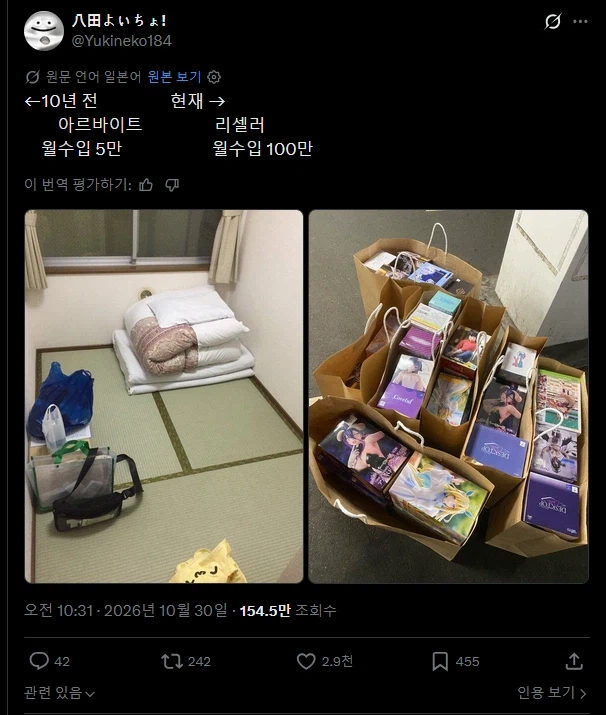
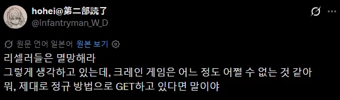
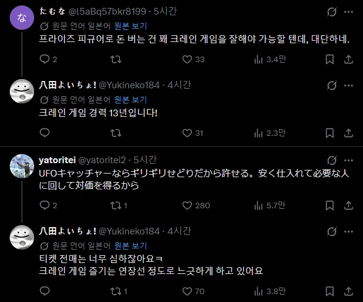

크레인 뽑기의 고가상품을 실력으로 쓸어와서 판매 ㅋㅋㅋ



크레인 뽑기의 고가상품을 실력으로 쓸어와서 판매 ㅋㅋㅋ
진짜 사냥꾼이네
이건 진짜 사냥꾼이 맞네
뽑기로만 파는거임?
수렵채집인 ㄷㄷ
암표상 따위랑 비교하지마라 저건 정식으로 헌터증 발급해줘야함 ㄹㅇ
저거 보니까 어릴때 생각나네 인형뽑기에서 인형뽑으면 1000원으로 바꿔줬었는데 5천원짜리나 만원짜리도 있고
뽑기 유투버 병행하고 있을려나
유튜브 하면 뽑기 비용은 멘징될듯
뭔가 건실하네
일본 기고 콜라보 진짜 뽑고싶은거 있어서 8500엔 박은적 있는데 고리빼는 형식의 크레인 진짜 존나 안뽑히더라 리셀러들은 얼마에 팔려나 했는데 10만원인거 보고 아 잘뽑았다 했음 ㅋㅋㅋ
의인